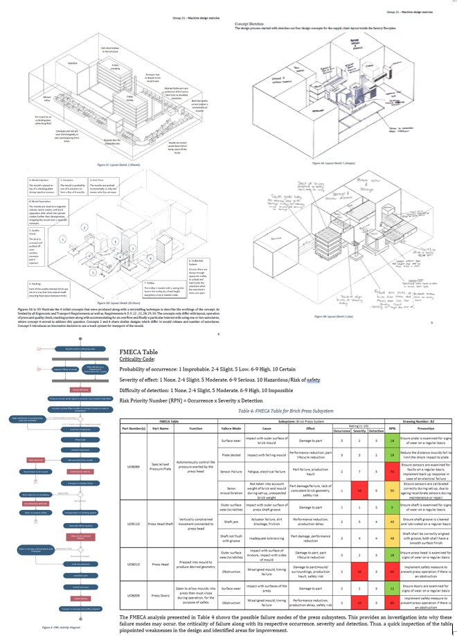
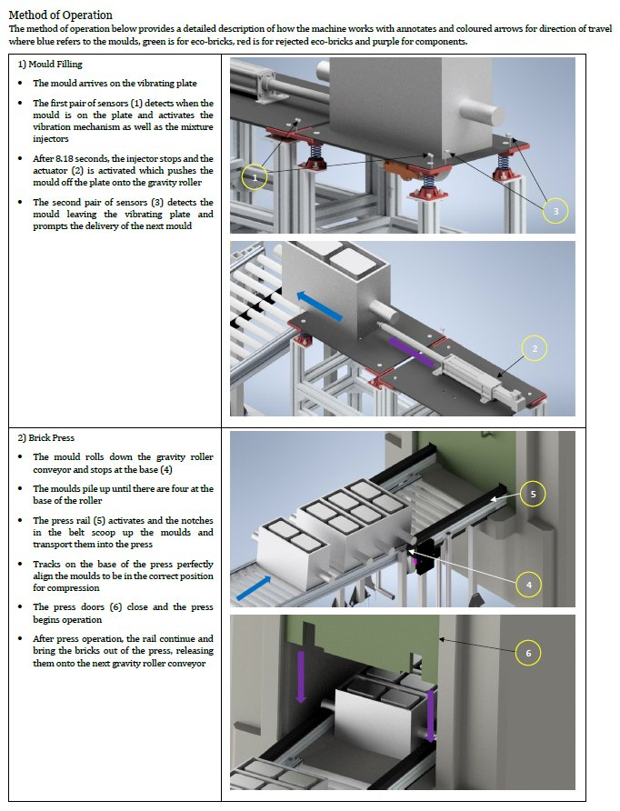
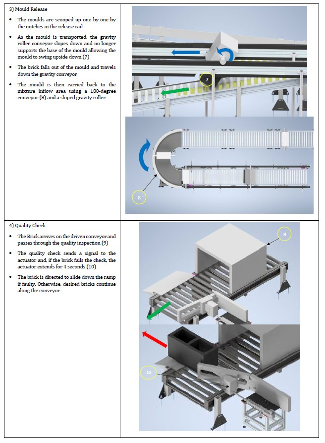

As lead designer of the supply chain, this project tackled the challenge of recycling shredded carbon fibre waste into eco-bricks — a sustainable alternative to landfill disposal of one of engineering's most valuable yet difficult-to-recycle materials.
The goal was to design a fully automated production line capable of meeting an investor's production rate and energy cost targets. I led the iterative design process from sizing calculations and concept generation through reliability analysis and final system design.
The design process began with sizing calculations to determine mould height and preliminary energy and production rate estimates. Four supply chain layout concepts were developed using a storytelling-style sketch approach to communicate the workflow.
Pugh's Matrix analysis evaluated each concept against requirements covering ergonomics, transport, reliability, production rate, and energy efficiency. Concept 4 — a track-based gravity system — was selected for its minimal energy footprint and reliable mould transport.
Reliability analysis followed, including UML activity diagrams, Fault Tree analysis, and a full FMECA table for the Brick Press subsystem. Identified failure modes — from sensor faults to press door obstructions — were addressed with targeted prevention actions and RPN scoring.

The final design is a fully automated gravity-driven production line with four key stages. Gravity roller conveyors minimise actuator requirements and energy consumption throughout, with sensors orchestrating each handoff between stages.
Sensors detect mould arrival on the vibrating plate. Injectors fill the mould with shredded carbon fibre mixture over 8.18s before an actuator pushes it onto the gravity roller.
Moulds travel down the gravity roller and accumulate at the press base. A belt rail scoops four moulds simultaneously into the press for compression.
The gravity roller slopes downward, allowing each mould to swing inverted. The brick falls out and travels down to the quality check conveyor.
Bricks pass through automated inspection. Faulty bricks are diverted via an actuator-controlled ramp. Passing bricks continue along the conveyor to storage.

